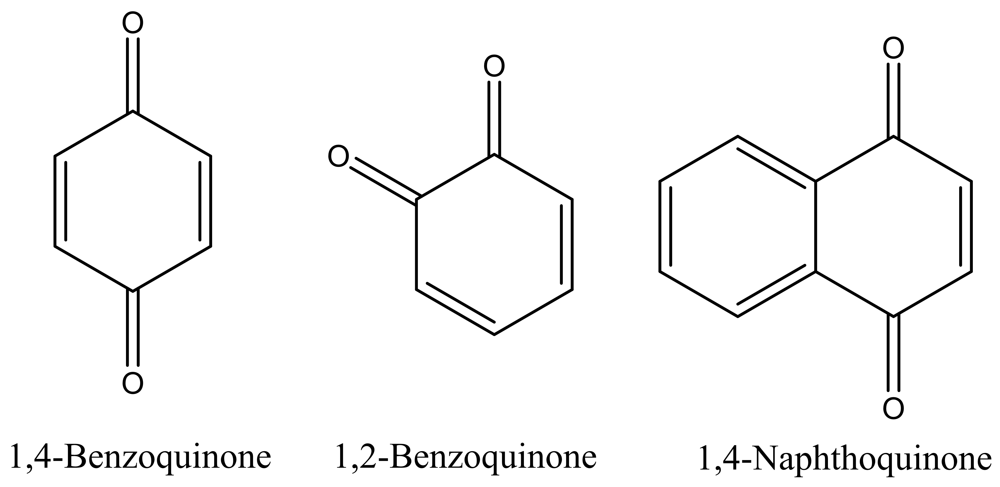
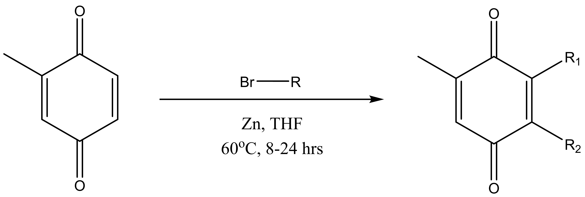
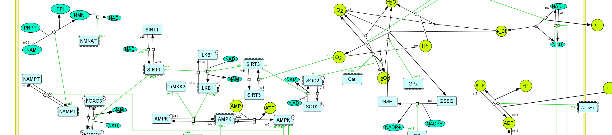

In Guanajuato, Mexico (2018)
Principal Investigator: Dr. Dana Lashley, College of William & Mary
Natural products are organic compounds that function as secondary metabolites. As often found in nature, their unique bioactive properties make them perfect candidates in drug discovery. Our work of medicinal chemistry, therefore, has been the synthesis, identification, and analysis of naturally occurring quinone derivatives, which have shown promising therapeutic properties.
Specifically, we are interested in developing novel and convenient synthetic pathways in the total synthesis of quinone derivatives. Our synthesized molecules are further analyzed for their potential biological activities.
You can read more about recent progress through my poster presentation at 2018 NOBCChE National Conference [.pdf, 222KB].
Principal Investigator: Dr. Randolph Coleman, College of William & Mary
Approximately 10% of electrons escape during electron transport across the ETC (electron transport chain). These lost electrons form reactive oxygen and nitrogen species (ROS and NOS, respectively) in the mitochondria. It's been long proposed that oxidative stress plays an important role in the development of neurodegenerative diseases.
Through in silico modeling, we investigate the propogation and maintenance of mitochondrial ROS levels and describe how changes in ROS levels affect mitochondrial viability. We hope to elucidate the role of mitochondria in the onset of Alzheimer’s Disease and discover new therapeutic targets for disease treatment. See our poster at 2018 Alzheimer's Association International Conference [.pdf, 1.66MB].